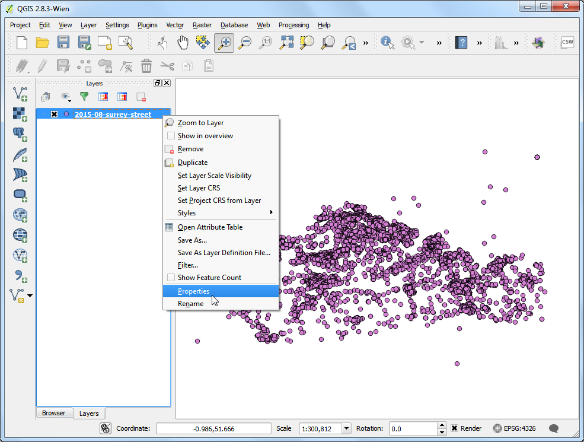
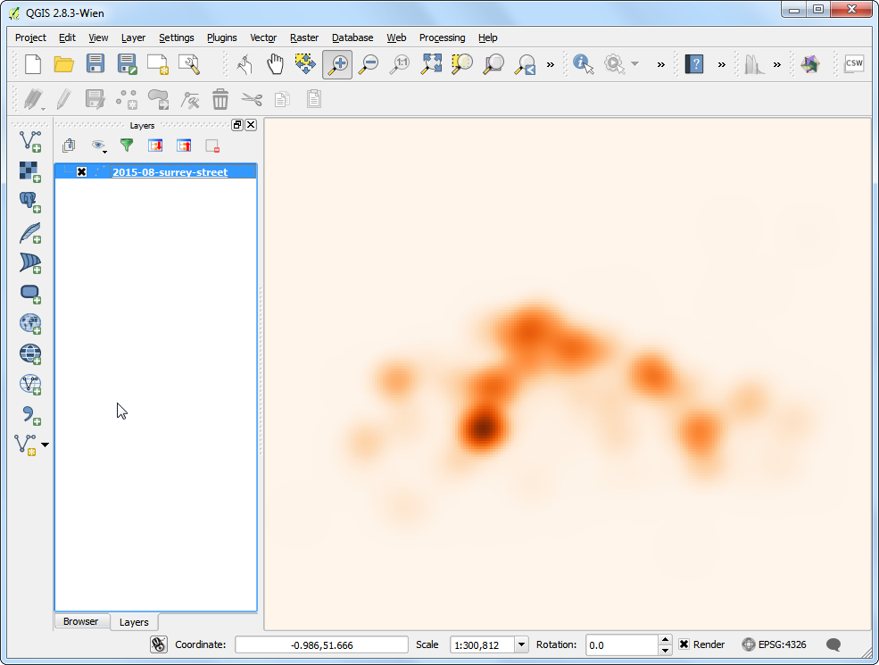
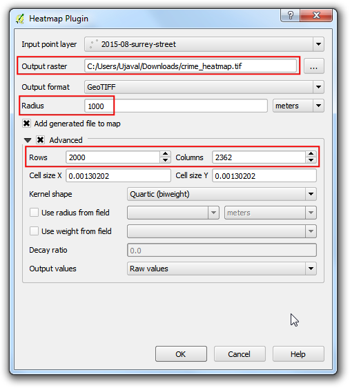
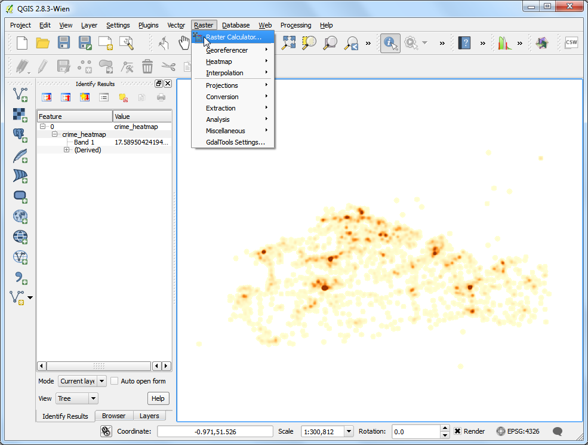
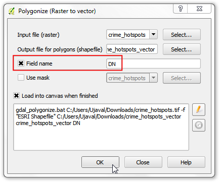
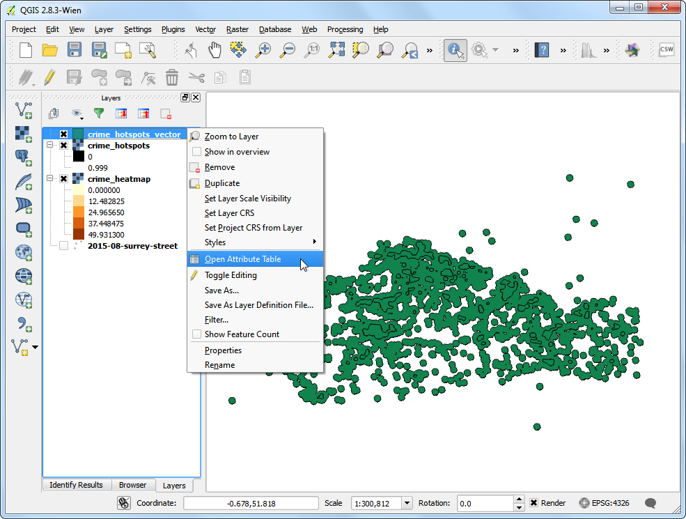
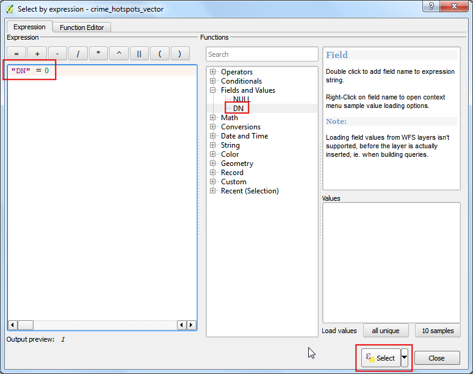

製作熱區圖
[ Download PDF
A4
Letter ]
熱區圖（Heatmap）最適合用來呈現高密度的點資料。它可用於識別點資料中的高度密集區域，在叢集分析或熱點分析的操作中也非常有用。
內容說明
我們會使用 2011 年在英國薩里郡（Surrey）的犯罪地點資料，找出郡內犯罪的熱點區域。
操作流程
首先，要把 CSV 檔匯入 QGIS 中 (細節請參考 匯入工作表或 CSV 檔)。選擇 。

找到並開啟 2015-08-surrey-street.csv (如果你是從他們網站直接下載的話，檔名可能會有些許不同)。檔案格式選擇 CSV (逗號分欄值) 後，可以看到 Longitude 和 Latitude 欄位自動帶入到 X 和 Y 座標了。勾選 使用空間索引，可以加快在此圖層上操作的速度，最後按下 確定。

載入時可能會看到一些錯誤，在本教學中可以先忽略它們。按下 關閉 即可。

資料被讀到 QGIS 後，你會看到一個警告框寫著 CRS was undefined: defaulting to CRS EPSG:4326 - WGS84。這是因為 CSV 載入程式的設定是如果你的座標是經緯度，那麼預設會用 EPSG:4326 來處理投影。在其他狀況下，會有一個視窗跳出來問你資料所使用的座標系統。因為我們的資料是以 EPSG:4326 投影，所以儘管忽略此警告沒關係。（譯按：隨著 QGIS 版本不同，也有可能會要求你輸入座標系統，這時選 EPSG:4326 即可。）
註解
如果要改變自動指定的 CRS，可以到 menuselection:向量 –> 資料管理工具 –> 定義目前投影 中修改。

稍微放大檢視資料，可以發現資料相當密集，很難快速判斷哪個區塊的點密度最高。這種情形下，就是熱區圖派上用場的時候。

如果你是要製作純粹用來視覺化或是列印出來的熱區圖，QGIS 有個內建的圖例樣式就叫做 熱區圖，先來試試看這個吧。在 2015-08-surrey-street 圖層上按右鍵，選擇 屬性。

在 屬性 視窗中切換到 樣式 的分頁，樣式類別設定成 熱區圖，你會看到有許多種不同的色階可以選，這裡我們來選個 Oranges 色階。其他參數保持不變，按下 確定 即可。

如此一來就可以看到資料的熱區圖，換句話說就是犯罪密集度高的地方比較「熱」。在剛才的參數頁面中有非常多的選項，可以調整到最適合某筆資料的情況。如果你只是要弄一個視覺化或列印版本的熱區圖，那麼就已經完成了！不過，我們在這邊還要再看看另一種更強大的熱區圖製作方法，它可以讓你使用熱區圖的輸出資料進行後續分析。

啟用核心附加元件 熱區圖，可參考 使用附加元件 進行操作。啟用後，選擇 。

在 Heatmap附加元件 的視窗中，輸出影像 欄位填上 crime_heatmap 當作輸出檔名，半徑 欄位填上 1000。這裡的「半徑」是指對每個像素而言，要使用多大的圓來計算有多少點涵蓋在內。把 進階設定 選項打開，這樣我們就能進一步設定輸出熱區圖的尺寸。在 行 欄位中輸入 2000，你會看到 列 欄位會自動更新。按下 確定後 就會開始製作熱區圖。

程式跑完後，會有一個叫做 crime_heatmap 的圖層出現在畫布上。現在可以把 2015-08-surrey-street 圖層取消勾選了。

讓我們來把這它弄得更像熱區圖，就像是早些時候的版本那樣。在熱區圖圖層上按右鍵選擇 屬性。

在 樣式 分頁中，繪圖類型 選擇 單波段偽彩色，然後在 載入最小/最大值 欄位下方的 精確程度，勾選 估算(較快)，接著按下 載入。程式會找出熱區圖的像素最小值和最大值，以供我們製作適當的色階。接下來在 產生新的色彩對映表 欄位中，選擇 YlOrRd (黃-橘-紅) 當作色階，接著按下 分類，最後按 確定。

現在就可以看到這個圖層變得比較像是熱區圖的感覺了。你可以使用 識別圖徵 工具，在熱區圖上的任一區點一下，就可以在結果視窗裡面看到這個像素的值。這個值代表圖層中有多少點落在這個像素周圍指定的區域內 (我們的例子是方圓 1000 公尺)。

這張熱區圖可以儲存下來供未來使用，在許多時候，我們要找的是那些地方有相當高的點密度（也就是熱點，Hotspot），接下來我們就來看要怎麼操作。選擇 ，

第一步是要決定一個門檻值，值比這個門檻還高的像素，會被當作位於高濃度區域。對於此筆資料，我們先來試試看 10 吧。在 影像計算 視窗中，把輸出圖層命名為 crime_hotspots，然後按兩下在 影像波段 欄位中的 cirme_heatmap@1，它就會被加入到下方的 影像計算表示式 當中。依照如下所示完成表示式，然後勾選 將結果加入專案，最後按下 確定。

接著 crime_hotspots 這個新圖層就會被加到 QGIS 中。這個圖層的像素值不是 0 就是 1，他們分別表示像素值小於等於 10 或大於 10。下一步選擇 。

把輸出檔命名為 crime_hotspots_vector，勾選 欄位名稱 以及 處理完成後載入 QGIS 地圖中，最後按 確定。（譯註：欄位名稱 請填上 DN。）

轉換完成後，QGIS 就會載入 crime_hotspots_vector。這是我們在前一步驟所製作的熱點分布圖的向量化表示法。目前此圖層包含了 0 與 1 的集合，所以我們還要把 0 的集合濾掉之後，剩下 1 的集合才是熱點的分布區。在圖層上按右鍵，選擇 開啟屬性表格。

在 屬性表格 視窗中按下 使用表示式選取圖徵 的按鈕。

輸入如圖所示的表達式，按下 選取，然後 關閉。

在屬性視窗中，可以看到符合條件的圖徵被選取了。按下工具列的 切換編輯模式，然後再按下 刪除已選取圖徵 (DEL) 按鈕。

把選取的圖徵刪除後，按下 儲存編輯 鈕，然後再按下 切換編輯模式 鈕把此圖層再次設定為唯讀。現在可以關閉屬性表視窗了。

在 QGIS 主視窗中，取消 crime_hotspots 圖層的勾選。我們的最終圖層 crime_hotspot_vector 現已包含從熱區圖中擷取出來的熱點。至此為止，我們已從原始資料中使用精巧的方法收集了熱點，或許你可以從中發現什麼洞見，或是為這些資料做進一步的處理分析。